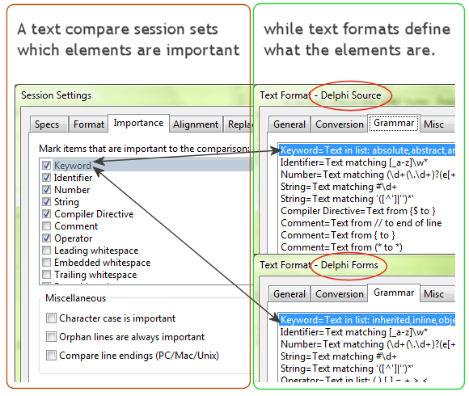

In Beyond Compare, file formats describe the syntax of specific kinds of files by defining elements. File formats are typically picked automatically, based on the filename extension.
A Text Compare session defines which elements are important to the comparison. Notice that the session settings deal with elements in a more abstract manner while the various file formats handle the syntax details.

To change the default importance of an element type:
| 1. | In the Home view's Saved sessions tree, under the Edit session defaults branch, select Text Compare. |
| 2. | In the tabbed control to the right of the tree, select the Importance tab. |
| 3. | Mark or unmark the appropriate checkboxes. |
| 4. | Click Save. |
To override importance only in the current Text Compare view:
| 1. | Open Sessions > Session Settings |
| 2. | Mark or unmark the appropriate checkboxes. |
| 3. | At the bottom of the dialog, choose Use for this view only from the drop-down. |
| 4. | Click OK. |
To override importance in a Folder Compare session:
| 5. | From the Folder Compare session, open a child Text Compare session. |
| 6. | Open Sessions > Session Settings |
| 7. | Mark or unmark the appropriate checkboxes. |
| 8. | At the bottom of the dialog, choose Use for all files within parent session from the drop-down. |
| 9. | Click OK. |